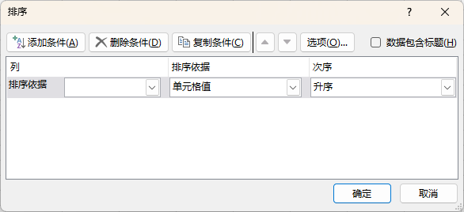
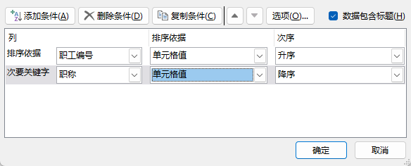
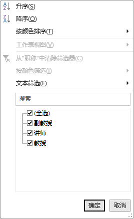
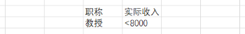
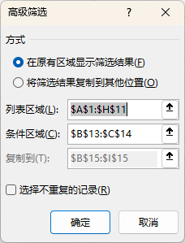
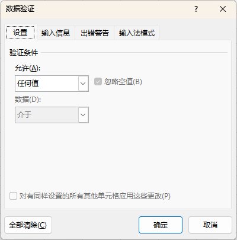
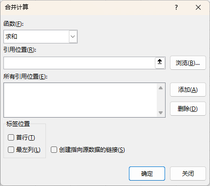
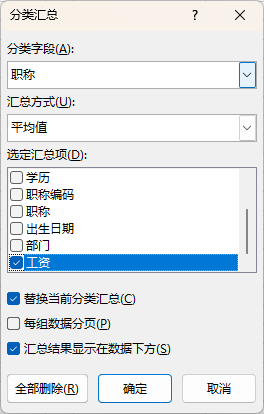

| item | desc |
|---|---|
| 文本 | 首字母拼音顺序 |
| 数字 | 数值大小，从小到大 |
| 日期 | 时间从早到晚 |
| 逻辑 | 假False、真True在后面 |
| 空白单元格 | 无论升序、降序都在最后 |





清除不可见字符：当从网页或系统导出数据时，单元格中常包含空格、换行符等不可见字符，导致数据无法正确匹配或计算。可以使用一个不会出现在数据中的特殊符号（如“|”）作为分隔符进行分列，Excel在拆分过程中会自动清除这些不可见的干扰字符
强制转换数据格式：将文本格式的数字或日期转换为真正的数字或日期格式。例如，一列看起来是日期的文本数据，通过分列功能，在第三步选择“日期”格式，即可一键将其转换为 Excel 可识别和计算的日期
按分隔符拆分：这是最典型的用法。例如，一列包含“姓名,部门,工号”的数据，你可以选择逗号作为分隔符，一键将其拆分为三列
按固定宽度拆分：适用于没有统一分隔符，但数据长度固定的情况。例如，从一串固定格式的编码中提取代表不同含义的几段数字
分离文本与数字：如果一个单元格内是“产品A100”这样的格式，可以巧妙地通过分列功能，将文本“产品A”和数字“100”分离开来


